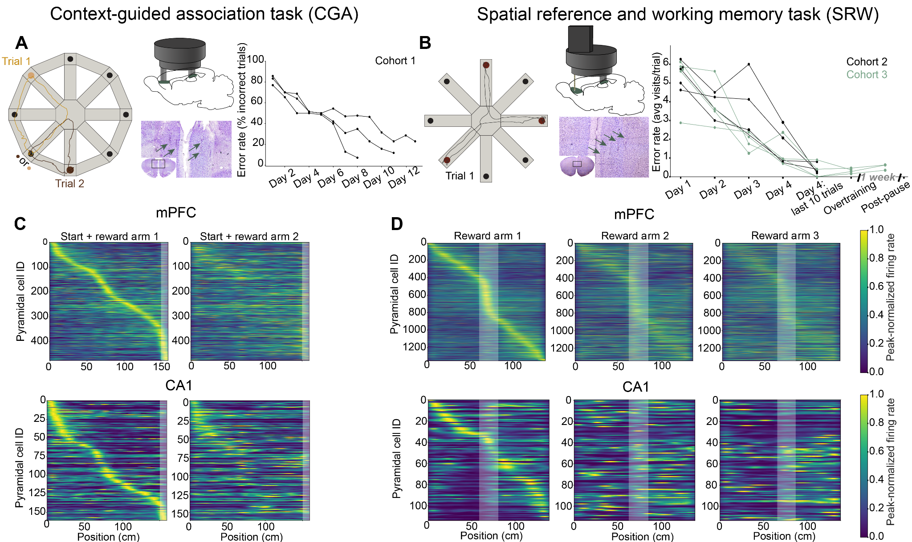
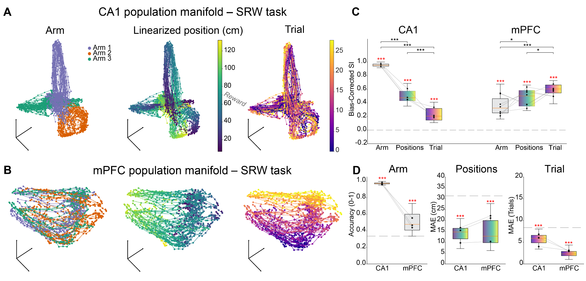
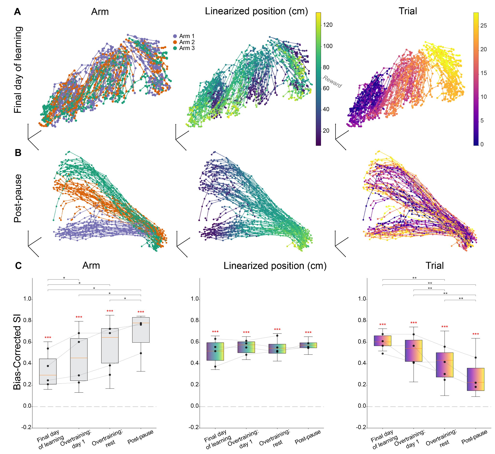

Prefrontal representations can specialize rather than generalize with experience
The hippocampus and medial prefrontal cortex (mPFC) coordinate their activity to support spatial memory and goal-directed navigation. Current models of systems consolidation, such as the Complementary Learning Systems (CLS) framework, assume that the mPFC extracts abstract, statistical invariants across repeated experiences to build generalized schemas. However, it remains largely unknown how the cortex maintains task specificity when behavioral goals demand the precise differentiation of spatial features.
To investigate this, we recorded population activity from CA1 and the mPFC as rats trained on radial maze tasks over several weeks. Our central hypothesis was that the mPFC undergoes a slow, experience-dependent reorganization of its population geometry—shifting from generalized tracking to highly specific spatial coding based on behavioral utility.
The analysis pipeline relies on high-density single-unit extracellular recordings utilizing both Neuropixels probes and custom 24-tetrode microdrives. The datasets capture behavior across two distinct tasks (Figure 1):
1. Spatial Reference and Working Memory (SRW) Task: Rats collected rewards from three fixed arms, transitioning from initial exploration to near-optimal performance within days.
2. Cue-Guided Association (CGA) Task: A highly demanding cognitive task requiring animals to utilize the identity of a food cue in a start arm to deduce the location of a baited arm elsewhere on the maze.

We tracked population activity by embedding the high-dimensional spike-count vectors into a low-dimensional manifold using Uniform Manifold Approximation and Projection (UMAP). This continuous temporal mapping allowed us to directly quantify how smoothly task features—such as arm identity and trial progression—were organized topologically across the embedding space.
Our initial findings showed that early in the training process, low-dimensional mPFC manifolds primarily tracked session progression and temporal context, exhibiting significant within-session drift. The mPFC generalized the task structure, demonstrating overlapping representations for distinct physical arms.
However, as animals gained task familiarity, this geometry shifted dramatically. The temporal tracking alignment weakened, and the mPFC manifolds began to clearly differentiate specific arms, mirroring the distinct spatial representations traditionally seen in the hippocampus. We quantified this shift using a bias-corrected Structure Index (SI) and cross-validated k-nearest-neighbor (KNN) decoders for arm identity, position (MAE), and trial progression (Figures 2 and 3).


By assessing data from a strategy-shifting plus-maze task, we further confirmed that this arm discriminability was selectively enhanced only at locations requiring spatial choices, and remained generalized when such demands were absent.
These findings demonstrate that systems consolidation does not uniformly promote cortical generalization. Instead, the mPFC dynamically refines its representations in response to specific task constraints. The initial encoding of temporal progression may signify active strategy exploration, while the subsequent compression into spatial task variables marks the transition to an optimized, stable execution schema.
For the brain-computer interface (BCI) industry and future applied neurotechnology, these representational dynamics are critical. They suggest that stable, long-term neural decoders must account for the intrinsic geometric drift that occurs naturally as an underlying biological network transitions from learning a task to mastering it.